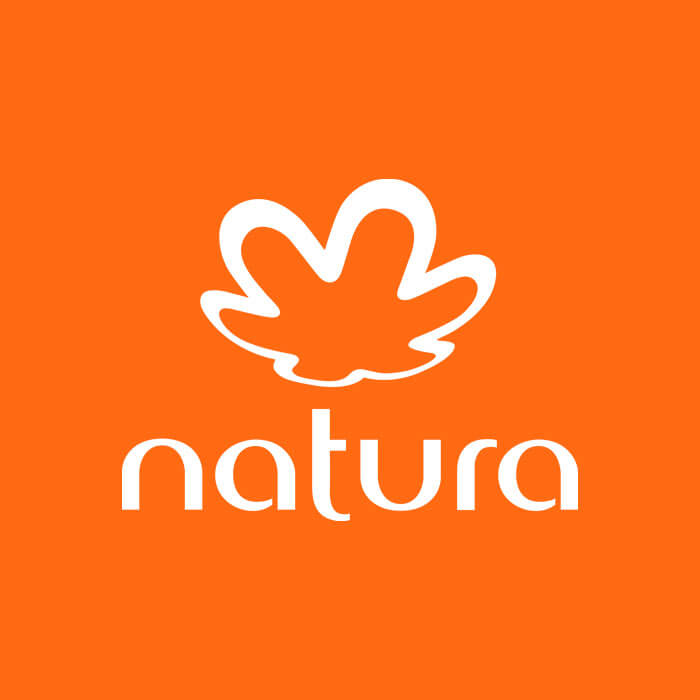

QUEM SOMOS
Empresa:
Nome:

Natura Cosméticos S.A.
Segmento atuante:
Beleza, higiene pessoal e cosméticos.
Publico-Alvo:
O público-alvo da Natura é amplo e diversificado, abrangendo principalmente mulheres e homens interessados em produtos de beleza, higiene pessoal e cosméticos que valorizam a sustentabilidade e o uso de ingredientes naturais. A empresa se concentra em atender consumidores que buscam produtos de alta qualidade, eficácia e que sejam produzidos de forma ética e ambientalmente responsável. Especificamente, o público-alvo da Natura inclui:
- Mulheres Adultas: Especialmente aquelas entre 25 e 45 anos, que estão interessadas em cuidados com a pele, maquiagem e produtos de bem-estar. Este grupo valoriza a sustentabilidade e a responsabilidade social, e está disposta a investir em produtos que refletem esses valores.
- Homens: Homens que procuram produtos de cuidados pessoais, incluindo higiene, cuidados com a pele e fragrâncias. A linha masculina da Natura é projetada para atender às necessidades específicas desse público.
- Famílias: Produtos como protetores solares, shampoos e condicionadores são destinados a todos os membros da família, promovendo saúde e bem-estar para todas as idades.
- Consumidores Conscientes: Pessoas de todas as idades que priorizam o uso de produtos que não prejudicam o meio ambiente e que são produzidos de maneira ética, sem testes em animais e com responsabilidade social.
- Consultores: Pessoas que buscam oportunidades de negócios e de renda extra através da venda direta dos produtos Natura. A empresa oferece suporte e treinamento para capacitar esses consultores a promoverem os produtos de maneira eficaz.
A Natura se destaca no mercado por seu compromisso com a sustentabilidade, inovação em cosméticos naturais e responsabilidade social, fatores que atraem consumidores conscientes e exigentes.
Portfólio e Diferenciais mercadológicos:
A Natura oferece uma ampla gama de produtos e serviços cuidadosamente desenvolvidos para promover o bem-estar e a beleza dos nossos clientes. Desde produtos para cuidados com a pele, cabelos e corpo até maquiagem e perfumaria, cada item reflete o compromisso da nossa marca com a qualidade e a sustentabilidade. Ela utiliza ingredientes naturais e práticas ecologicamente corretas em suas linhas, garantindo eficácia e responsabilidade ambiental. Seu diferencial no mercado inclue a inovação constante, buscando sempre trazer novidades que atendam às necessidades dos nossos consumidores. Além disso, o compromisso com a sustentabilidade é um pilar fundamental em todas as etapas de produção e distribuição dos produtos. O público-alvo abrange pessoas que valorizam produtos de qualidade, preocupam-se com o meio ambiente e buscam soluções eficazes para seus cuidados pessoais. Estão comprometidos em oferecer experiências únicas e produtos que fazem a diferença na vida de nossos clientes. Seus produtos incluem:
- Produtos para cuidados com a pele (cremes, loções, protetores solares)
- Produtos para cuidados com os cabelos (shampoos, condicionadores, máscaras)
- Maquiagem (batons, bases, sombras)
- Perfumes
- Produtos para cuidados com o corpo (hidratantes, esfoliantes)
- Produtos para o bem-estar (óleos essenciais, aromatizadores)
Missão, Visão e Valores
Missão: Promover o bem-estar e a beleza de forma sustentável, utilizando ingredientes naturais e práticas ecologicamente corretas. Nossa missão na empresa é promover o bem-estar e a beleza através de produtos sustentáveis e inovadores. Estamos comprometidos em oferecer soluções que não só cuidem da pele, cabelos e corpo, mas também respeitem o meio ambiente e contribuam positivamente para a sociedade.
Visão: Ser a empresa global de cosméticos mais admirada pela inovação, pela sustentabilidade e pelo impacto positivo na sociedade. Nossa visão é ser reconhecidos globalmente como líderes no setor de beleza e cuidados pessoais, sempre impulsionados pela inovação e pelo compromisso com a sustentabilidade. Buscamos constantemente expandir nossos horizontes, mantendo a excelência em tudo o que fazemos.
Valores: Compromisso com a sustentabilidade, inovação constante, respeito às pessoas e responsabilidade social. A sustentabilidade guia todas as nossas decisões e ações. Valorizamos a transparência, a ética e o respeito em nossos relacionamentos com clientes, colaboradores e parceiros. Nosso compromisso com a qualidade está presente desde a seleção de ingredientes até a entrega dos produtos finais, garantindo a confiança e satisfação de todos os envolvidos.
Nossa História
Fundada em 1969 (com inicio das atividades em 28 de agosto do mesmo ano) por Luiz Seabra, Jean-Pierre Berjeaut e Guilherme Leal, a Natura Cosméticos S.A. começou suas atividades como uma modesta empresa dedicada à produção de cosméticos naturais em São Paulo, Brasil. Inspirados pela riqueza da biodiversidade brasileira, os fundadores estabeleceram a empresa com a missão de promover o bem-estar e a beleza de forma sustentável. Rapidamente expandiu suas operações para se tornar uma das principais marcas de beleza, higiene pessoal e cosméticos na América Latina. A visão da Natura é ser a marca de cosméticos preferida e confiável globalmente, guiada por valores de integridade, sustentabilidade, respeito às pessoas e paixão pela inovação. Ao longo dos anos, a Natura cresceu significativamente, não apenas em termos de mercado e receita, mas também em sua influência no setor de cosméticos globalmente. Iniciativas como o programa Carbono Neutro e a aquisição estratégica da The Body Shop ampliaram sua presença global e reforçaram seu compromisso com a sustentabilidade ambiental. Inicialmente a Natura contava com 10 colaboradores, hoje, ela emprega aproximadamente 6.000 colaboradores diretos e conta com uma rede de mais de 1,7 milhão de consultoras autônomos. Utilizando ingredientes naturais e práticas de produção ecológicas, a inovação é um pilar central, com lançamentos frequentes baseados em pesquisa e desenvolvimento. A Natura continua a inspirar novas gerações de consumidores e empreendedores, refletindo seu compromisso duradouro com a criação de um impacto positivo e significativo na sociedade e no planeta.
Localização
A sede da Natura Cosméticos S.A. está localizada em Cajamar, São Paulo, Brasil.
Depoimentos de Clientes e Consultores
"A Natura não apenas transforma a beleza exterior, mas também valoriza a autoestima de cada cliente que usa seus produtos."Joana Silva, Consultora Natura
"Desde que comecei a usar os produtos da Natura, minha pele e cabelos nunca estiveram tão saudáveis. Recomendo a todos!"Carlos Ferreira, Cliente Natura
"Ser consultora Natura me permitiu não apenas aumentar minha renda, mas também crescer como pessoa e profissional. A empresa realmente se preocupa com o desenvolvimento de cada um de nós."Maria Oliveira, Consultora Natura
"A Natura mudou minha visão sobre cuidados pessoais. A qualidade dos produtos e a preocupação com a sustentabilidade fazem toda a diferença."Lucas Santos, Cliente Natura
"Os produtos da Natura são incríveis! Eles realmente cuidam da nossa pele e do meio ambiente ao mesmo tempo. Sou fã!"Ana Costa, Cliente Natura
Histórico de Inovações
- 1970: Lançamento da linha Ekos, focada em ingredientes da biodiversidade brasileira.
- 1990: Introdução do programa Carbono Neutro, compensando emissões de carbono.
- 2006: Aquisição da The Body Shop, ampliando presença global.
- 2019: Início do projeto de reflorestamento na Amazônia, recuperando áreas degradadas.
- 2020: Lançamento da linha Natura Lumina, com fórmulas avançadas para tratamento capilar sustentável.
- 2021: Criação do Programa Amazônia Viva, focado em promover a economia da floresta em pé e a conservação da biodiversidade.
- 2022: Início da produção de embalagens recicláveis e biodegradáveis para todas as linhas de produtos.
- 2023: Expansão do projeto de energia renovável, implementando painéis solares nas fábricas e centros de distribuição.
- 2024: Parceria com startups de tecnologia para desenvolver novos métodos de cultivo sustentável de ingredientes naturais.